Configuration Part
For configuration you can click on Shipstation > Configuration > ShipStation Configuration

Shipstation is one of the leading web based software that has been developed specifically for eCommerce retailers. ShipStation helps merchants to process fulfill and ship all the orders from various market places including shopping carts with the help of all top shipping carriers.
Odoo 10 Shipstation Connector
Here as you can see we have the screen of Odoo where you can log in after selecting the database including the login and password
Once you logged in you can see the shipstation connector that has been installed into Odoo
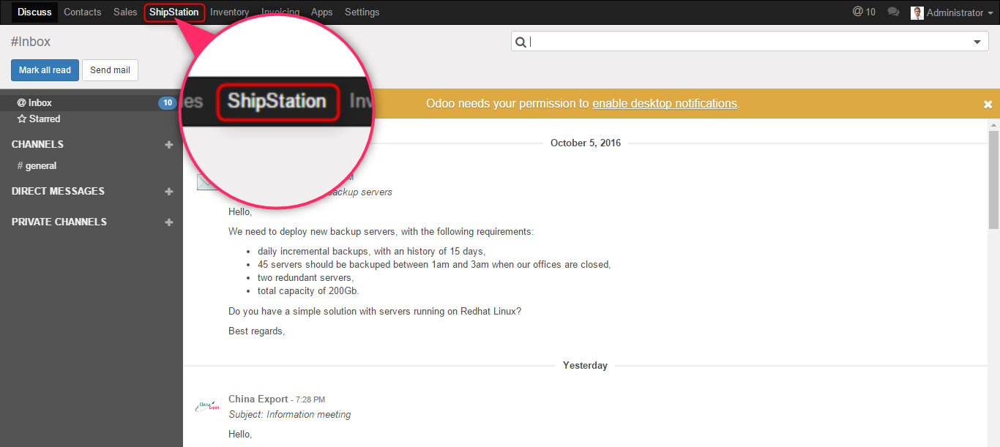For configuration you can click on Shipstation > Configuration > ShipStation Configuration
From the configuration you can click on create button.
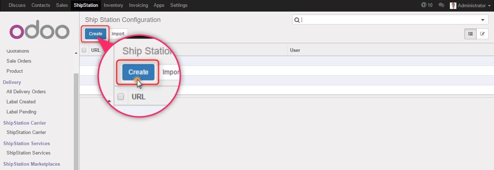After Clicking on Create button a form will open where you need to fill up the necessary information such as Name – URL – User – Password etc. these are necessary details to create the configuration in Odoo for Shipstation
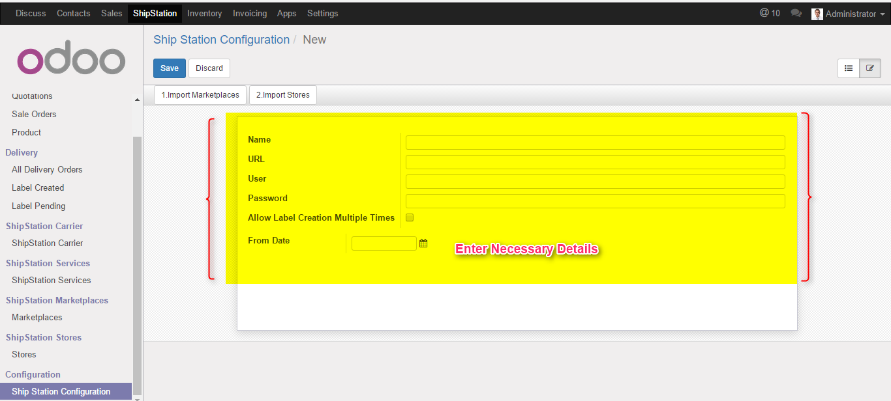Here you can see that we have filled up all the necessary information as required to generate the connection in Odoo

Once you have added all the information you can click on Save button
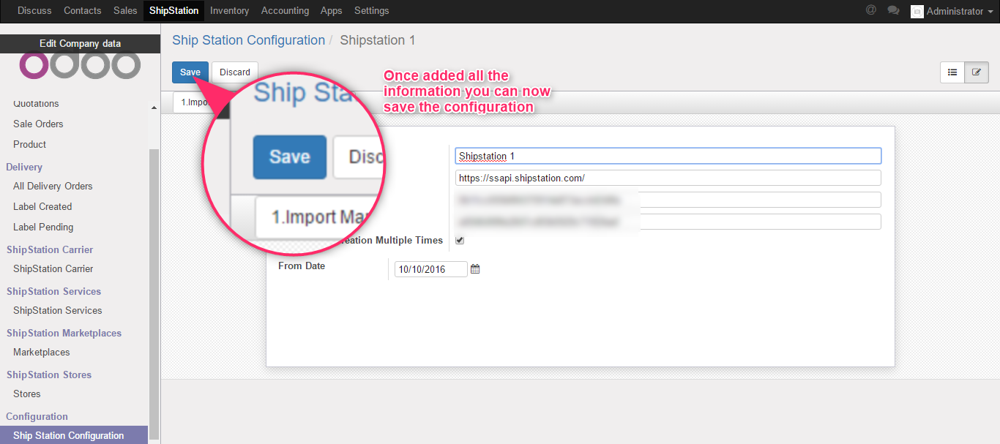Here in the below image you can see there are 2 buttons which allows you to import all your market places and all your stores from shipstation to Odoo
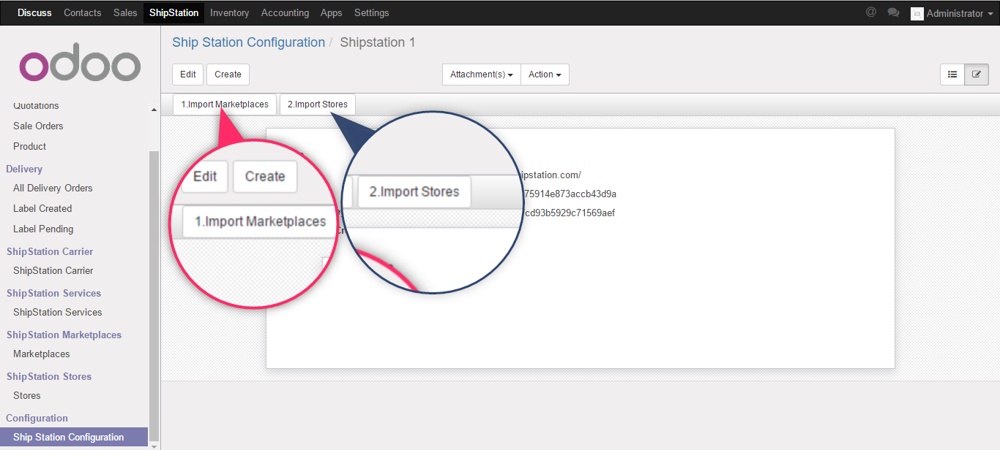Below is the image where we have list of all imported market places from Shipstation into Odoo which can be seen from the menu Shipstation Marketplaces > Market Places
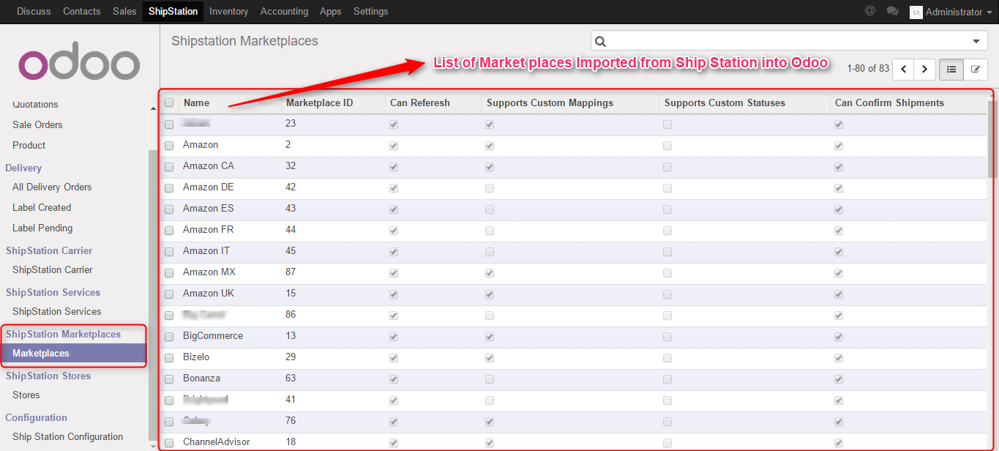To check the list of imported stores you can simply click on the menu Shipstation stores > Store which will showcase you the store that has been imported
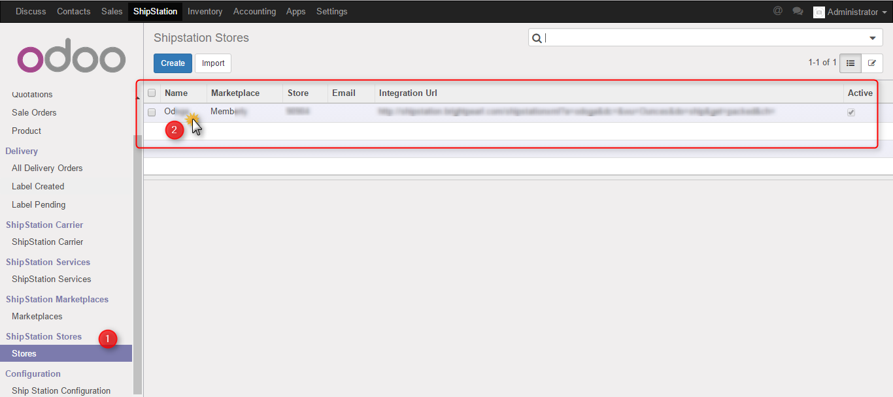Once you click on Get Carrier button all the carriers will be imported from ShipStation to Odoo
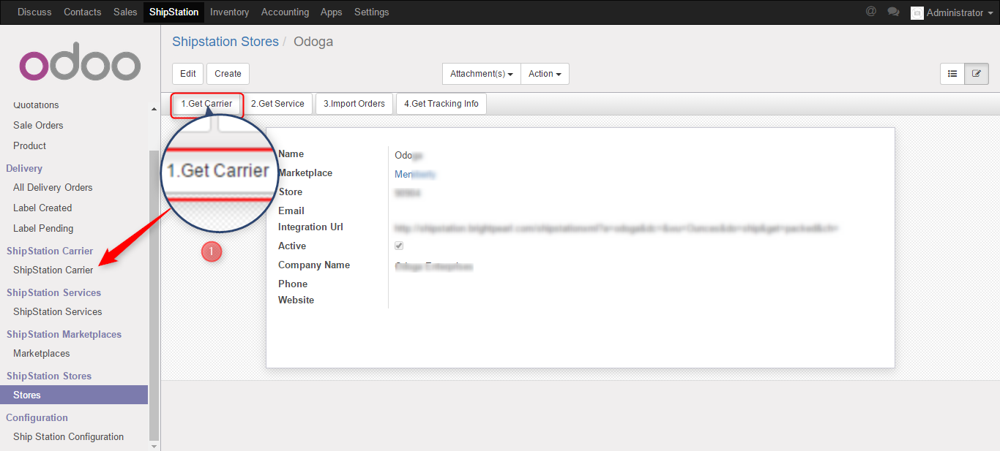
You can get all the Shipping services from Shipsation into Odoo
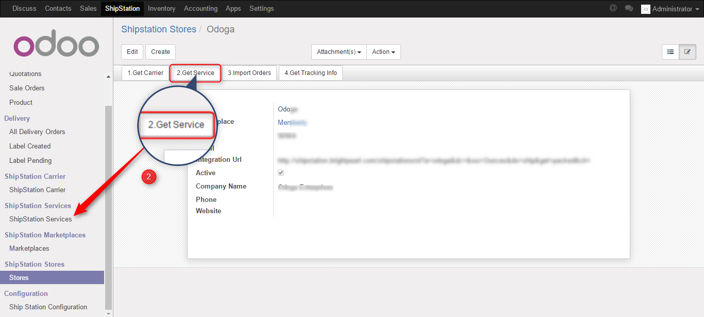Import of orders button help you to import all the orders from Shipstation into Odoo
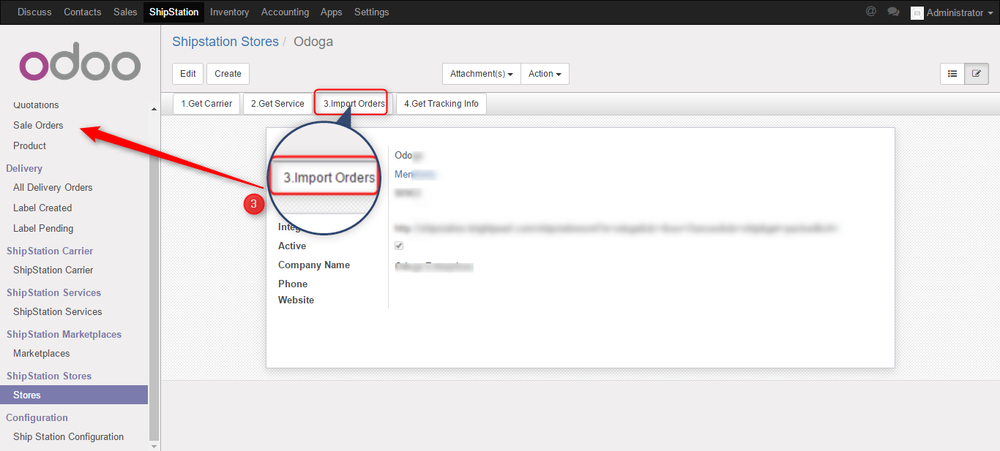Get Tracking information button help you get all the tracking info from Shipstation to Odoo.
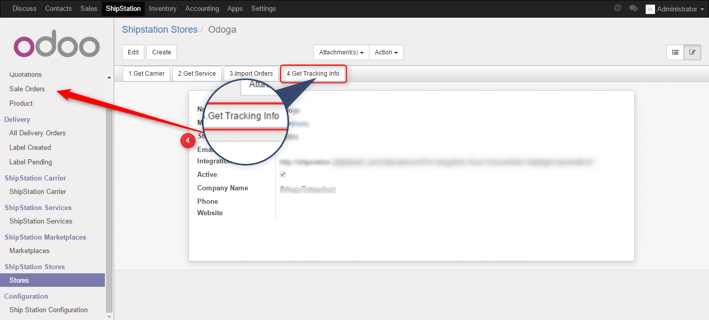There are important steps that needs to be followed for generating rates in Odoo to create labels
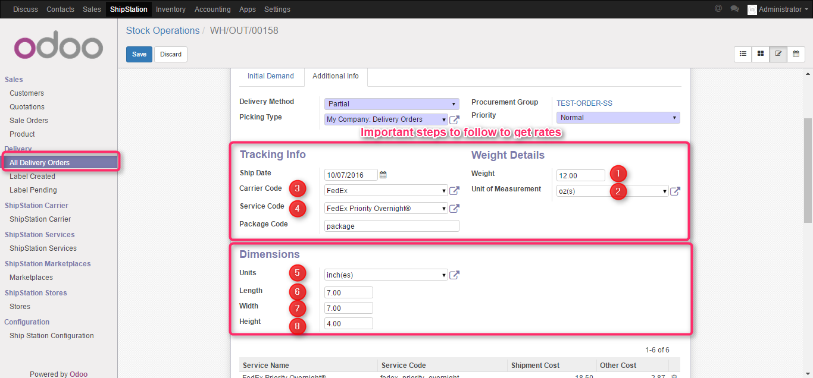1. Weight
2. Unit of measurement
3. Carrier Code
4. Service Code
5. Units
6. Length
7. Width
8. Height
As you click on the button “Get Rate” below you can see the list of rates has been generated from shipping services. You can see the visibility of the shipping services based on the shipping services you have sign up with ShipStation, therefore based on Carrier code (2) selected automatically the service code will be showed (3)
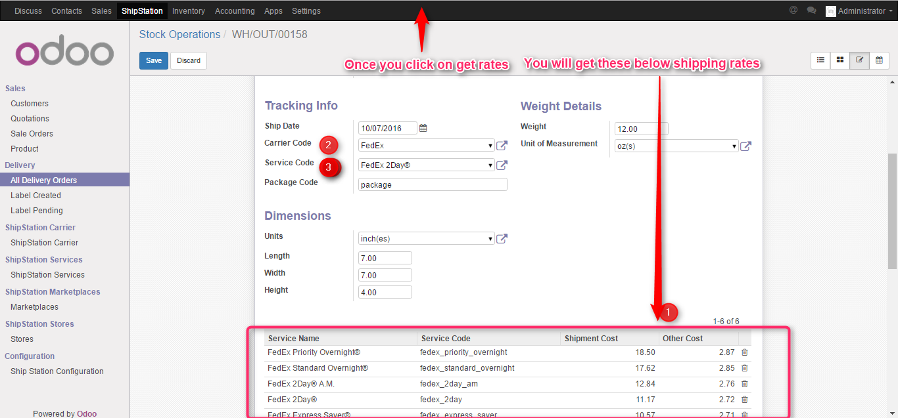To create labels you can click on the button Create Label
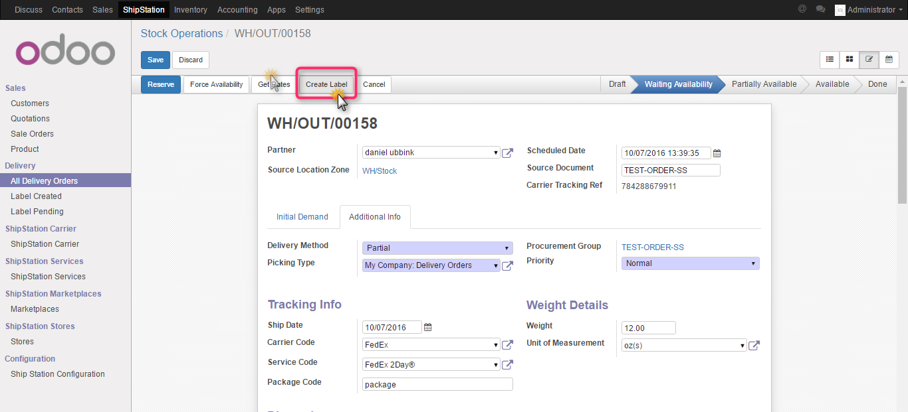Here you can see that we have generated Carrier Tracking Number which will be updated to Shipstation from Odoo. Once you click on “Marked as Shipped” the same will be updated in ShipStation
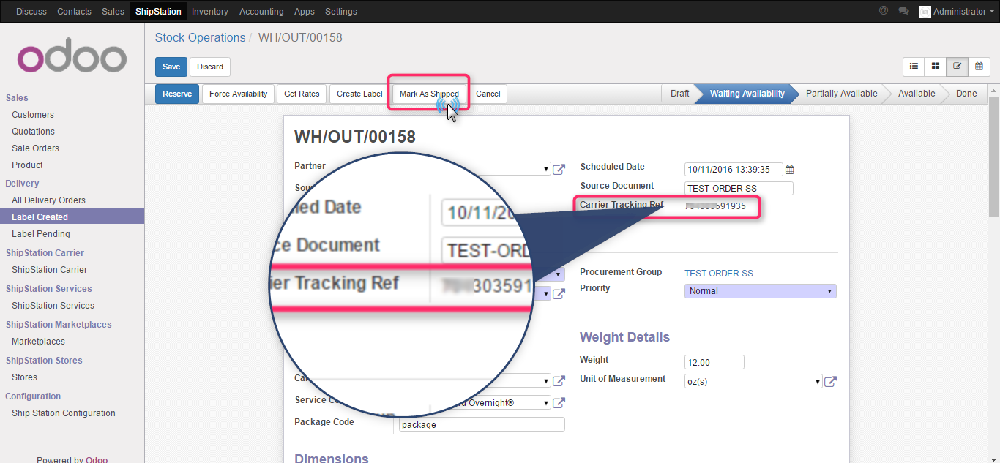At GlobalTeckz we specialize in providing ERP implementation using the best of industry methodology that ensures successful ERP implementation. Be it manufacturing trading or eCommerce industry our resource thirve to make every project success for our clients. Globalteckz is an official partner of one of the leading open source erp solution named as Odoo and have completed more than 50+ implementation across the globe.
If you feel that this module (Shipstation Module) can be helpful for your business feel free to email us on sales@globalteckz.com